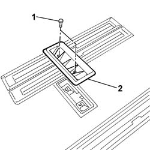

5010C44 AIR DIFFUSER TO REAR SEAT - R+R
- Path
- Procedures > 50 AUXILIARY UNITS > 5010 HEATING/VENTILATION - MISCELLANEOUS > 5010C AIR OUTLET AND DIFFUSERS > 5010C44 AIR DIFFUSER TO REAR SEAT - R+R
- Kind
- repair procedure (removal / refitting; the operation number is the code)
- Applies to
- all engines; all production periods
- Interactive page
- https://sloeber94.github.io/elrnDB-fUlss/en/#/179007447
Applies to: all engines; all production periods
 Removing
Removing
 Refitting
RefittingOp. 7050A90 REAR SEAT (ONE) - R RE - REPAIR WITH SEAT REMOVED
1. Undo the retaining bolts.
2. Remove the rear seat diffuser.

Applies to: all engines; all production periods
Refitting
Removing- Position the rear seat diffuser.
- Tighten the retaining bolts.
Op. 7050A90 REAR SEAT (ONE) - R RE - REPAIR WITH SEAT REMOVED